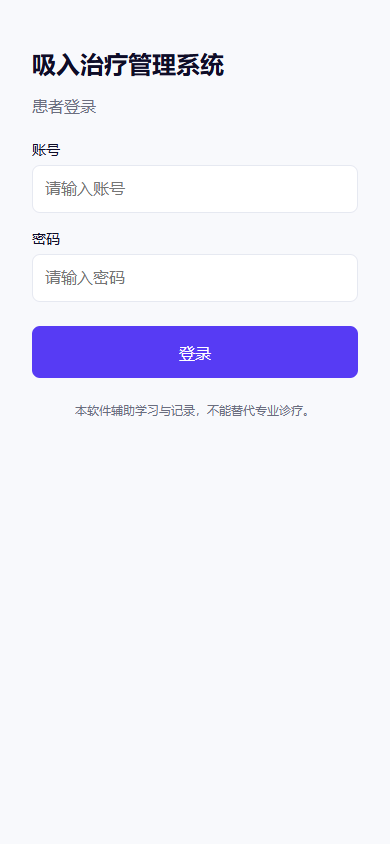
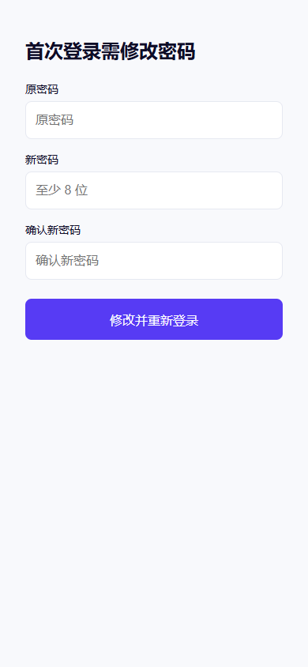
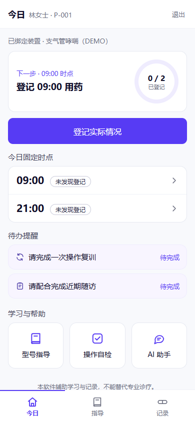
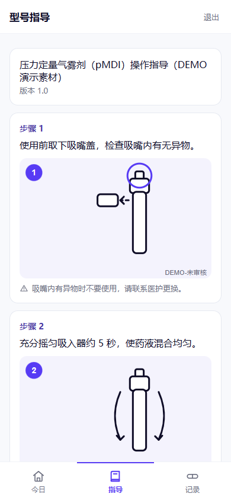
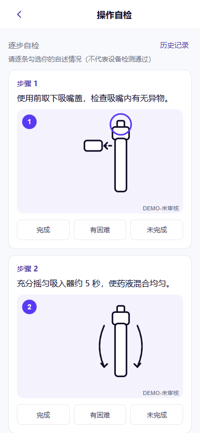
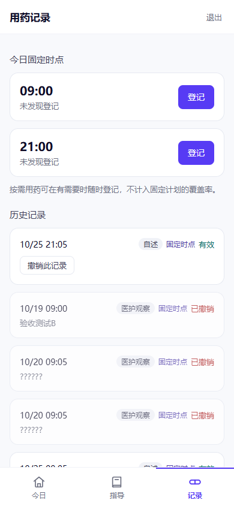
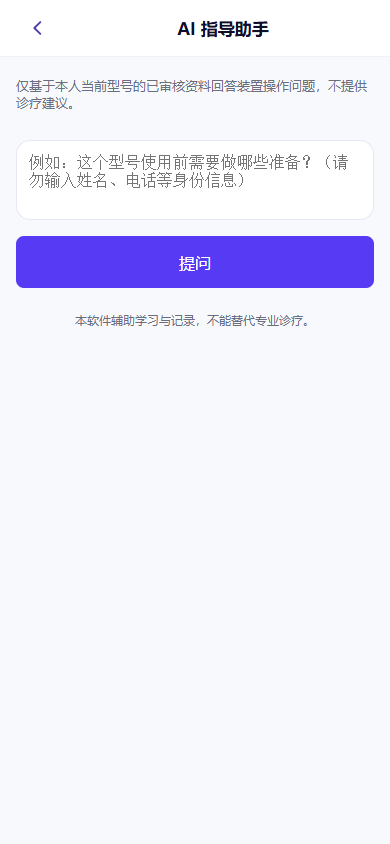
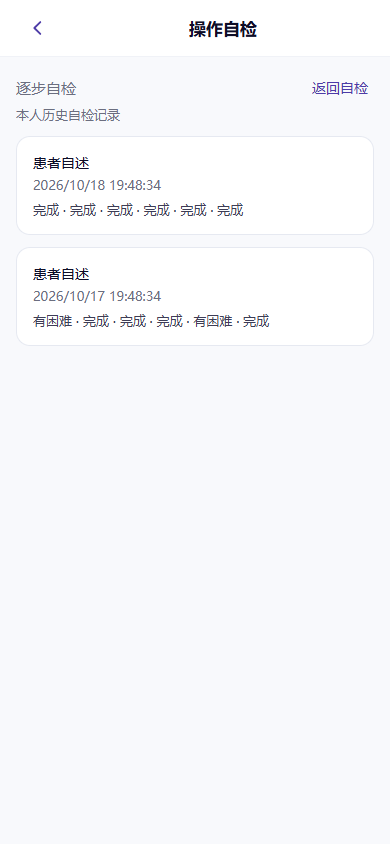
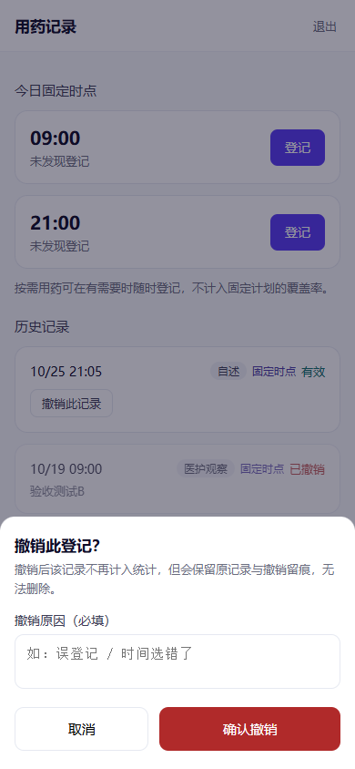
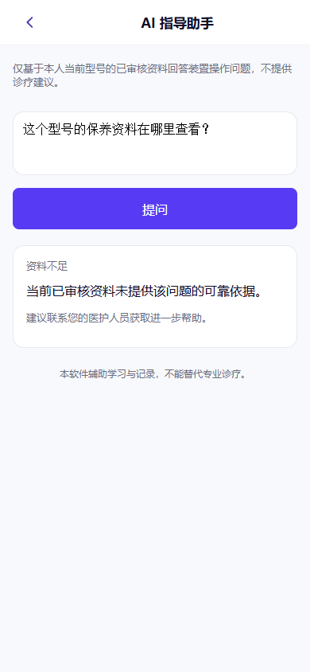

01 · 登录
当前代码实拍
7个页面 + 3个展开状态。全部重新运行当前 patient-app 源码截取。
390 × 844 手机视口，浏览器实拍；不包含 Android 原生状态栏、软键盘和系统返回行为。连接本地真实后端；仅“助手反馈”使用隔离示例响应。产品代码未修改。










共同基底：沿用网页的浅灰底、白色内容区、字体和图标。紫色突出主操作，蓝色用于趋势，青绿表示已登记，杏色表示需关注。去掉姓名后的编号与重复小字；必要风险提示和资料来源保留。
| 位置 | 方案一：保留结构，统一视觉 | 方案二：按手机操作重排（推荐） |
|---|---|---|
| 导航与首页 | 保留“今日／指导／记录”；首页减掉重复描述，今日时点紧凑排列，七日数据用小图呈现。 | 仍用三个底栏；首页优先展示“现在要做什么”，下一次用药和登记按钮最突出，学习、提醒、趋势按优先级下移。 |
| 指导与自检 | 保留连续阅读；图片缩小，步骤合并为平面列表，减少每步一张卡。 | 每屏看一步、做一步，显示当前进度；底部固定“上一步／下一步”，减少长距离滚动。 |
| 记录与助手 | 记录按日期分组，用细线隔开；助手精简说明、出处收起，保持现有提问流程。 | 记录改为周日期选择＋当天时间线；助手增加常见问题入口，答案与出处分层呈现。 |
| 调整幅度 | 较小，原有操作路径最熟悉。 | 较大，改排布和阅读节奏，单手操作更集中。 |
两套均保留三项底栏。网页继续侧栏＋表格，APP采用纵向信息和底部操作；危险确认保留底部弹层。七日逐日图使用真实数据，缺数据时不画假趋势。
本轮只有当前截图与文字提案，尚未实施任一方案。下一步先选方向，再做关键页面效果图。